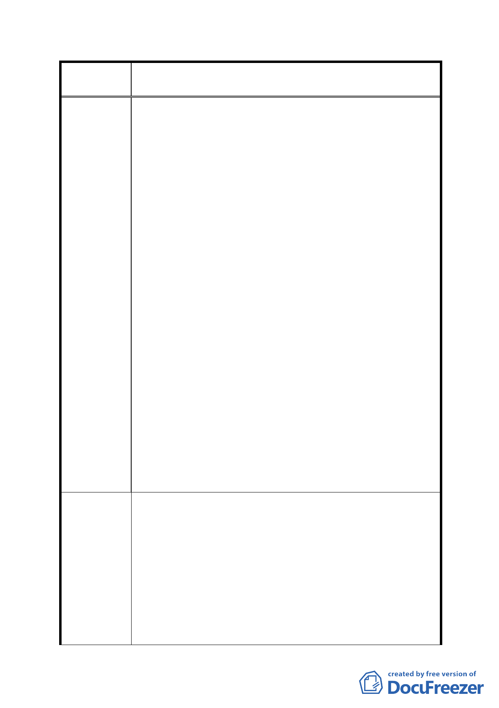

案
名
修訂臺北市「基隆河（中山橋至成美橋段）附近地區土地使
用分區與都市設計管制要點」（北段地區）計畫案
看申請案增加之獎勵容積之總和不得超過基準容積之
50%(不含容積移轉基準容積之 20％)， 限定本區之容積上
限，與其他區域之臺北好好看案件審查機制不符，因此本
區不應以大彎北段細部計畫通盤檢討限定參與「促進都市
再生 2010 年臺北好好看」之個案。
四、建築物高度議題 :
本案開發計畫定位為「都市文化樞紐」與「生態永續城
市」，並留設大量開放空間，得依「促進都市再生 2010
年臺北好好看」容積獎勵機制規定增加容積與高度。並為
塑造優美之天際線，應放寬之建築物高度規定；而不應提
出商業區(供商業購物中心使用)，建築高度以不低於 60
公尺為原則之規定。
五、土地使用強度之建蔽率議題
大彎北段之發展定位為未來北市副都心，為兼顧商業、購
物、商務及住宅等產業發展需求，並結合大眾運輸系統與
留設公共開放空間，達到緊密城市 (Compact City)之永
績都市目標。為提供大量之開放空間，然而細部計畫通盤
檢討中提出各種使用分區採用綜合設計放寬規定者，其建
蔽率不得低於 40％，惟建築基地面積在 1 公頃以上者，經
臺北市都市設計及土地使用開發許可審議委員會審議通
過者，其建蔽率可酌予調整 5％。其規定與臺北好好看為
留設大量公共開放空間之理念不符合。
一、土地及建築物之使用：
應修訂商業使用比例，管制商業使用容積總量。原細部計
畫內做指定使用項目之面積應達申請基地總樓地板面積
1/2 以上。但考慮商業使用量下降，以及扣除梯廳、機電
建 議 辦 法 設備等空間，建議修正為：於建築物低層部商業使用容積
不得低於基地法定容積率之 1/5。將商業活動設置於地面
1-2 層樓，整區整合將會使商業活動活絡。
二、建築物立面寬度 :
建議整合位於大彎北段參與「促進都市再生 2010 年臺北
- 86 -